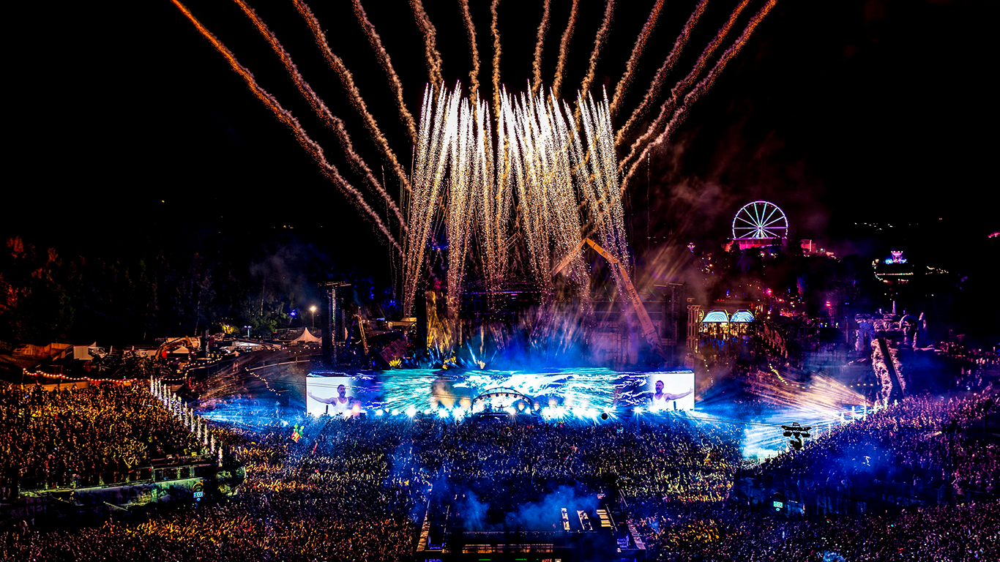
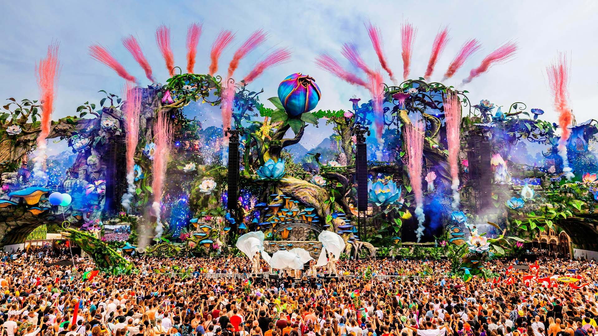
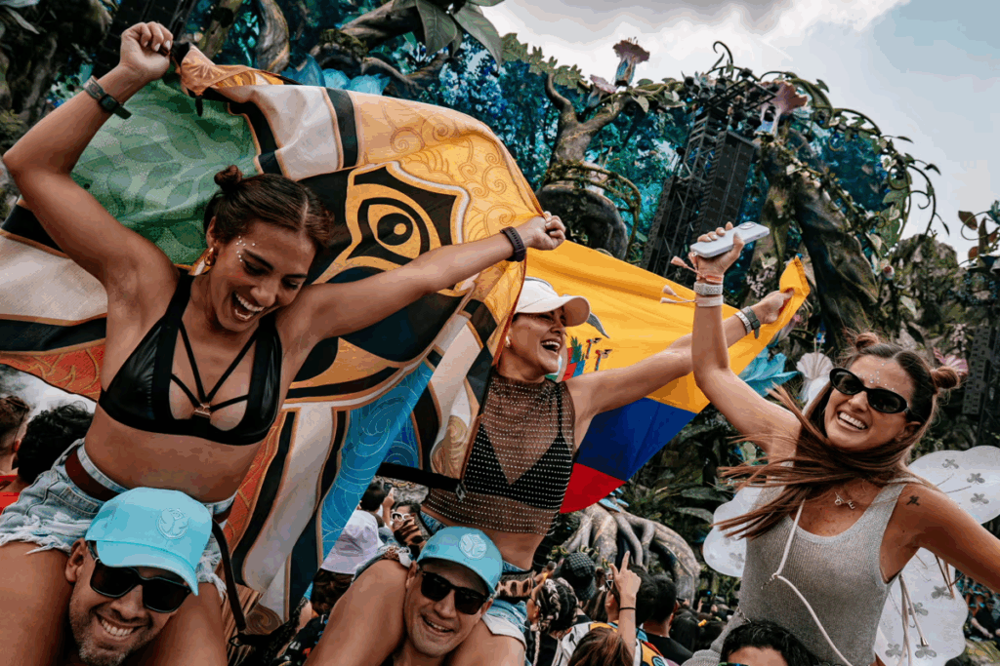
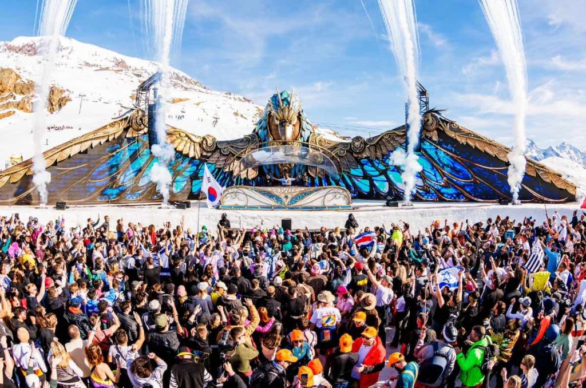

El festival de música electrónica más famoso del mundo

Tomorrowland es un festival de música electrónica que se celebra anualmente en Bélgica. Es conocido por sus escenarios mágicos, producción impresionante y artistas internacionales.

17–19 DE JULIO Y 24–26 DE JULIO DE 2026
De Schorre • Boom, Bélgica
Prepárese para unirse en Holy Grounds en Bélgica, donde 400.000 Personas del Mañana de más de 200 países se reúnen para crear amistades duraderas. Reúnase en un festival temático mágico, un mundo de música, narración de historias y experiencias inolvidables.

